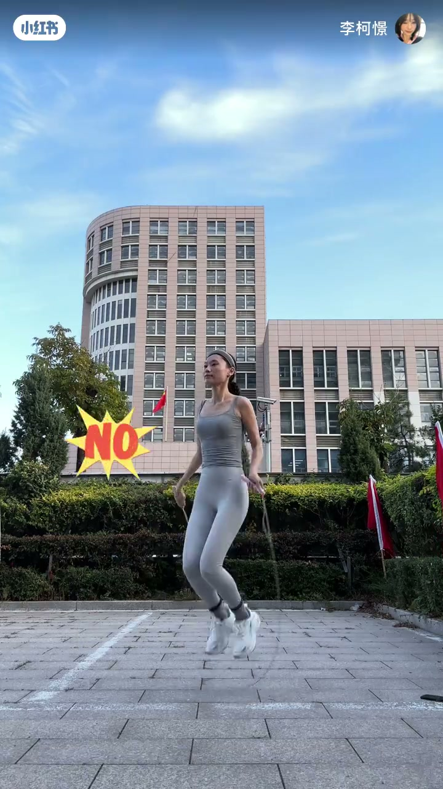
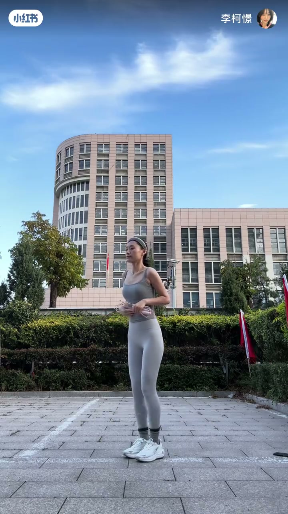
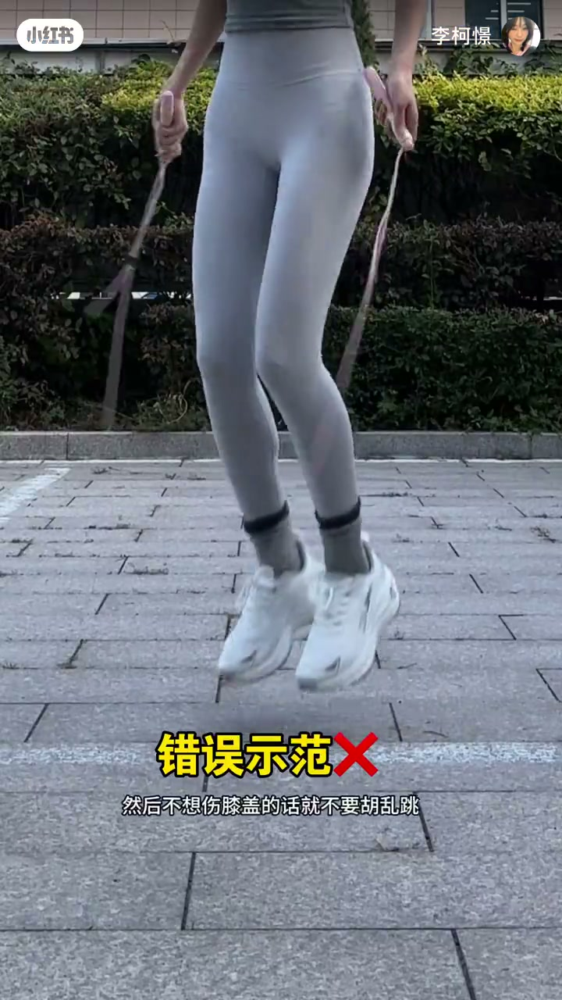
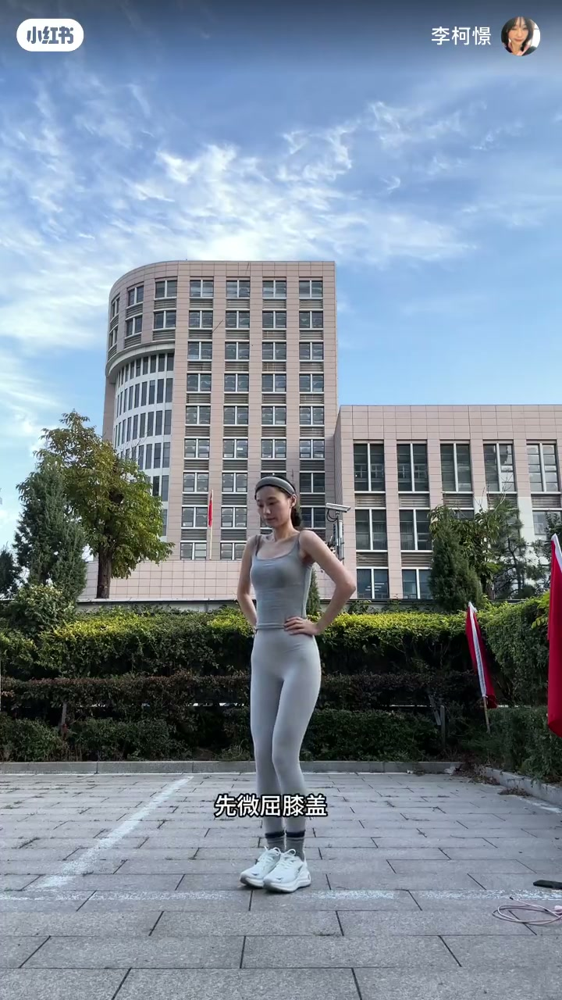
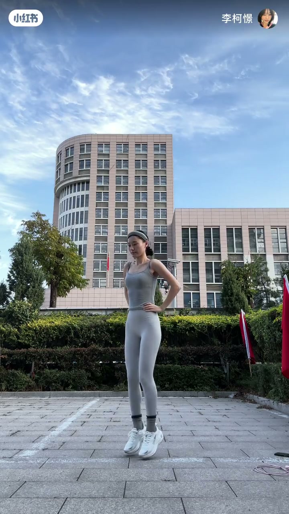

内容要点
知识结构
跳绳人人都会，但体态常出问题；不正确姿势跳一阵未必瘦下来，却可能先伤腰。
上身不能后仰；跳绳时收紧腹部核心，上身略前倾，收回下巴，眼睛目视前方，不看天花板也不看脚下。
不想伤膝盖就不要胡乱跳。绳子很细，轻轻跳起就够，不需要跳很高。
并脚站立、双手插腰；微屈膝后前脚掌与脚踝发力上跳，离地时双腿保持笔直；落地前脚掌先着地、脚跟始终不落地，膝盖由直到微屈，像弹簧缓冲。先原地跳，再前后跳练习。
体态优先于“跳得猛”：上身稳、跳得低、落地软——用核心和膝关节缓冲保护腰椎与膝盖。
图文实录
开场：人人都会跳，为什么还要学
视频以标题「跳绳标准动作 · 体态篇」开场。教练自问自答：跳绳人人都会跳，还需要学吗？答案是当然要——因为很多人的跳绳体态可能正是接下来要纠正的错误样子。
错误示范：上身后仰伤腰椎
首先点名最常见错误：上身一定不能后仰。画面给出「错误示范 / NO」标记。教练提醒：这样跳一段时间，还没瘦下来不说，先把腰椎搞坏了（Whisper 记作「拐坏了」）。

正确上身：收核心、略前倾、收回下巴
正确做法是跳绳时收紧腹部核心，让上身略有前倾，同时收回下巴；眼睛目视前方，不要看天花板，也不要看脚下。这一段把「腰背稳定」和「头部视线」绑在一起讲，避免后仰时常见的仰头或低头补偿。

跳跃幅度：绳子很细，轻轻跳起就够
不想伤膝盖，就不要胡乱跳。教练强调绳子其实很细，只要轻轻跳起就可以，不需要跳很高。画面再次打出「错误示范❌」，对应胡乱高跳的风险提示。

跟练：并脚插腰，微屈膝后前脚掌起跳
进入跟练口令：并脚站立、双手插腰；先微屈膝盖（Whisper 误作「围去」），连起前脚掌，脚踝发力向上跳。整个离地过程双腿要保持笔直（Whisper 误作「比值」）。

落地：前脚掌着地，膝盖像弹簧缓冲
落地瞬间前脚掌先着地，后脚跟始终不着地；同时膝盖由直变成微微弯曲，之后脚踝再继续发力跳起。关键要求是让膝关节像弹簧一样起到缓冲效果，不要硬邦邦落地。练习顺序：先原地跳，再前后跳。
